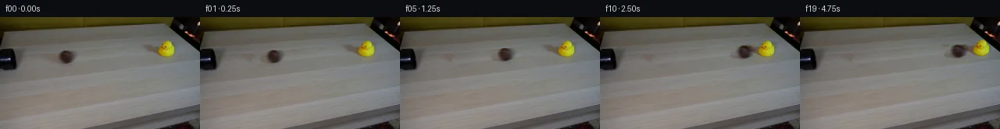

![首帧]()

Round 00
2026-11-04T19:36:18.336920+00:00像素候选变化代码 +169/−0inspection 更新
pixels bc10d282c096a7d9 · code 17fc92b157525874
查看本轮 generate.py 真实 diff
--- previous/generate.py
+++ current/generate.py
@@ -0,0 +1,169 @@
+"""Deterministic local pixel continuation. No external models or render engines."""
+from pathlib import Path
+import json
+import numpy as np
+from PIL import Image, ImageDraw
+import cv2
+from scipy.ndimage import gaussian_filter, map_coordinates
+from artifact_io import save
+
+ROOT = Path(__file__).resolve().parent
+SOURCE = np.asarray(Image.open(ROOT / 'first_frame.png').convert('RGB')).astype(np.float64)
+H, W = SOURCE.shape[:2]
+Y, X = np.mgrid[:H, :W].astype(float)
+
+
+def soft_ellipse(cx, cy, rx, ry, feather=0.20):
+ d = np.sqrt(((X-cx)/rx)**2 + ((Y-cy)/ry)**2)
+ u = np.clip((1-d)/feather, 0, 1)
+ return u*u*(3-2*u)
+
+
+def repair(source, mask, dx, dy):
+ """Aligned nearby wood, with a robust boundary brightness-plane match."""
+ donor = np.stack([map_coordinates(source[..., c], [Y+dy, X+dx],
+ order=1, mode='nearest') for c in range(3)], -1)
+ # Match low-frequency illumination using an annulus outside the erased area.
+ support = (mask > 0).astype(np.uint8)
+ ring = (cv2.dilate(support, np.ones((7, 7), np.uint8)) > 0) & (mask == 0)
+ qx, qy = X[ring], Y[ring]
+ design = np.stack([np.ones_like(qx), (qx-qx.mean())/30, (qy-qy.mean())/20], -1)
+ pred = np.stack([np.ones_like(X), (X-qx.mean())/30, (Y-qy.mean())/20], -1)
+ diff = source[ring]-donor[ring]
+ weight = np.ones(len(diff))
+ for _ in range(4):
+ coef = np.linalg.lstsq(design*weight[:, None], diff*weight[:, None], rcond=None)[0]
+ residual = np.linalg.norm(diff-design@coef, axis=1)
+ weight = np.minimum(1, 8/np.maximum(residual, 1))
+ donor = np.clip(donor + np.einsum('hwj,jc->hwc', pred, coef), 0, 255)
+ return source*(1-mask[..., None]) + donor*mask[..., None]
+
+
+def warp(layer, dx, dy, angle=0, pivot=(0, 0)):
+ matrix = cv2.getRotationMatrix2D(pivot, angle, 1.0)
+ matrix[:, 2] += (dx, dy)
+ return cv2.warpAffine(layer.astype(np.float32), matrix, (W, H),
+ flags=cv2.INTER_CUBIC, borderMode=cv2.BORDER_CONSTANT)
+
+
+# The mask covers the sphere and its faint left cast shadow, including blurred edges.
+ball_erase = np.maximum(soft_ellipse(85.2, 51.6, 18.2, 13.0, .28),
+ soft_ellipse(76.7, 54.7, 13.3, 7.3, .35))
+base_ball = repair(SOURCE, ball_erase, 42, -4.8)
+ball_layer = SOURCE-base_ball
+
+# A second independent texture repair is only used after the duck starts moving.
+duck_erase = np.maximum(soft_ellipse(212.7, 41.0, 15.1, 16.1, .24),
+ soft_ellipse(198.4, 43.0, 20.0, 10.0, .30))
+base_all = repair(base_ball, duck_erase, -43, 4.9)
+duck_layer = base_ball-base_all
+
+# Split the duck from its cast shadow using a manually measured contour.
+contour = np.array([(211,29.7),(215.4,29.4),(218.2,31),(219.9,33.3),
+ (220.2,35.5),(222.3,37),(223.6,40),(223.1,45.2),
+ (221.2,47.7),(218.8,49.3),(216,50.6),(211.3,50.9),
+ (207.1,49.7),(204.1,47.6),(202.1,44.7),(202.0,41.5),
+ (203.1,38.6),(205.7,36.4),(207,33.3),(209,31.2)])
+scale = 8
+contour_mask = np.zeros((H*scale, W*scale), np.uint8)
+cv2.fillPoly(contour_mask, [np.round(contour*scale).astype(np.int32)], 255)
+duck_body_mask = cv2.resize(contour_mask.astype(float)/255, (W,H),
+ interpolation=cv2.INTER_AREA)
+duck_body_mask = gaussian_filter(duck_body_mask, .45)
+duck_body = duck_layer*duck_body_mask[...,None]
+duck_shadow = duck_layer-duck_body
+
+# Surface detail is read from the source ball. Low-frequency photographed shading
+# stays in screen coordinates; a sphere rotation advects only the material detail.
+cx, cy, radius = 84.6, 51.1, 7.8
+nx, ny = (X-cx)/radius, (Y-cy)/radius
+inside = nx*nx+ny*ny < .86**2
+nz = np.sqrt(np.maximum(0, 1-nx*nx-ny*ny))
+ball_texture = SOURCE-gaussian_filter(SOURCE, (1.15,1.15,0))
+surface_window = np.clip((.90-np.sqrt(nx*nx+ny*ny))/.22, 0, 1)
+reference_detail = ball_texture*surface_window[...,None]
+
+
+def rolling_layer(distance):
… diff truncated; 82 more lines …